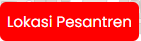

Pondok Pesantren Al-Munawwir
1. Gunakan tombol zoom in , zoom out, dan reset bearing to north untuk mengatur posisi peta.
2. Titik biru bertuliskan huruf "A" merupakan titik lokasi Anda.
3. Klik tombol  untuk menampilkan lokasi Pondok Pesantren Al-Munawir
4. Klik salah satu bangunan sebagai tujuan destinasi.
5. Rute ditampilkan sebagai garis biru pada peta.